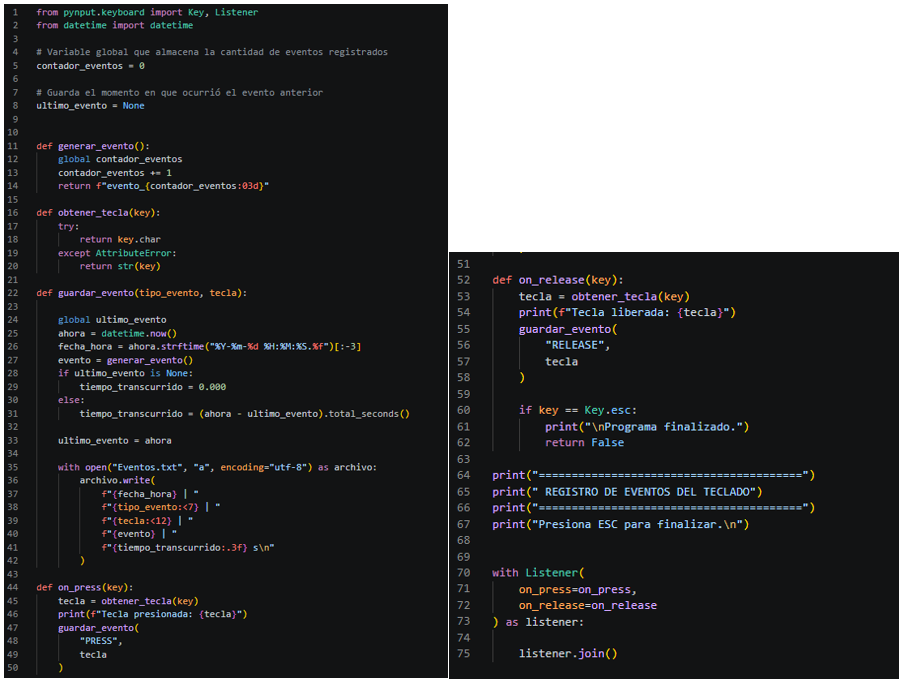
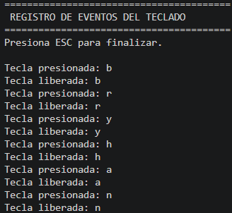
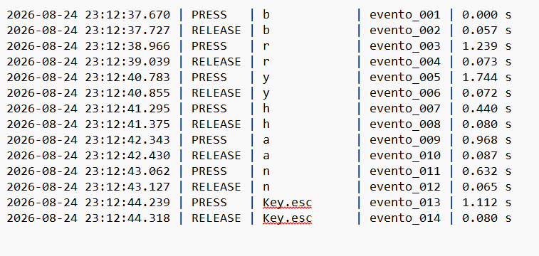

Detectar eventos
Identificar cuándo una tecla es presionada o liberada.
ACTIVIDAD 03
Implementación y documentación de un programa desarrollado en Python que permite detectar eventos de teclado mediante pynput, registrar cada evento en un archivo local y asociarlo con una marca temporal para analizar su orden de ocurrencia.
student@lab :~$ python actividad3.py
REGISTRO DE EVENTOS DEL TECLADO
Presiona ESC para finalizar.
Tecla presionada: h
Tecla liberada: h
Tecla presionada: o
Tecla liberada: o
✓ Eventos registrados
✓ Eventos.txt actualizado
El objetivo de esta actividad es implementar y documentar un programa capaz de detectar eventos producidos por el teclado, almacenar dichos eventos en un archivo local y asociarlos con información temporal.
El ejercicio permite comprender cómo funcionan los eventos de entrada dentro de un sistema y cómo es posible conservar un registro ordenado para su posterior análisis.
La práctica fue desarrollada exclusivamente como ejercicio académico dentro de un entorno de laboratorio controlado.
Identificar cuándo una tecla es presionada o liberada.
Guardar los eventos en un archivo local sin eliminar los registros anteriores.
Incorporar fecha, hora, orden de ocurrencia y tiempo transcurrido.
El usuario presiona o libera una tecla.
pynput detecta automáticamente el evento.
El programa identifica si ocurrió PRESS o RELEASE.
Se agrega fecha, hora e identificador consecutivo.
La información se almacena en Eventos.txt.
La clase Listener permite escuchar los eventos generados por el teclado y ejecutar funciones específicas al presionar o liberar una tecla.
Se utiliza para obtener la fecha y hora exacta en la que ocurrió cada evento y permitir su correlación temporal.
Cada registro recibe un identificador único y consecutivo como evento_001, evento_002 y evento_003.
Función ejecutada automáticamente cuando el Listener detecta que una tecla fue presionada.
Registra la liberación de una tecla y permite finalizar el programa cuando se detecta la tecla ESC.
Archivo local utilizado para conservar los registros generados durante la ejecución del programa.
Cada evento registrado durante la ejecución es almacenado dentro de un archivo de texto local.
El archivo se abre utilizando el modo
"a", correspondiente a
append.
La función guardar_evento() recibe la información del evento y la incorpora al archivo.
with open(
"Eventos.txt",
"a",
encoding="utf-8"
) as archivo:
archivo.write(
informacion_evento
)
La librería datetime permite registrar el momento exacto en que ocurre cada evento.
ahora = datetime.now()
fecha_hora = ahora.strftime(
"%Y-%m-%d %H:%M:%S.%f"
)[:-3]
El programa también puede calcular cuánto tiempo transcurrió desde el registro anterior.
tiempo_transcurrido = (
ahora - ultimo_evento
).total_seconds()
2026-08-24 22:31:01.052 | PRESS | h | evento_001 | 0.000 s 2026-08-24 22:31:01.136 | RELEASE | h | evento_002 | 0.084 s 2026-08-24 22:31:01.452 | PRESS | o | evento_003 | 0.316 s 2026-08-24 22:31:01.539 | RELEASE | o | evento_004 | 0.087 s
Día en que ocurrió el evento.
Hora exacta y milisegundos.
PRESS o RELEASE.
Identificador consecutivo.
Tiempo desde el evento anterior.



from pynput.keyboard import Key, Listener
from datetime import datetime
contador_eventos = 0
ultimo_evento = None
def generar_evento():
global contador_eventos
contador_eventos += 1
return f"evento_{contador_eventos:03d}"
def obtener_tecla(key):
try:
return key.char
except AttributeError:
return str(key)
def guardar_evento(tipo_evento, tecla):
global ultimo_evento
ahora = datetime.now()
fecha_hora = ahora.strftime(
"%Y-%m-%d %H:%M:%S.%f"
)[:-3]
evento = generar_evento()
if ultimo_evento is None:
tiempo_transcurrido = 0.000
else:
tiempo_transcurrido = (
ahora - ultimo_evento
).total_seconds()
ultimo_evento = ahora
with open(
"Eventos.txt",
"a",
encoding="utf-8"
) as archivo:
archivo.write(
f"{fecha_hora} | "
f"{tipo_evento:<7} | "
f"{tecla:<12} | "
f"{evento} | "
f"{tiempo_transcurrido:.3f} s\n"
)
def on_press(key):
tecla = obtener_tecla(key)
print(
f"Tecla presionada: {tecla}"
)
guardar_evento(
"PRESS",
tecla
)
def on_release(key):
tecla = obtener_tecla(key)
print(
f"Tecla liberada: {tecla}"
)
guardar_evento(
"RELEASE",
tecla
)
if key == Key.esc:
print(
"\nPrograma finalizado."
)
return False
print(
"========================================"
)
print(
" REGISTRO DE EVENTOS DEL TECLADO"
)
print(
"========================================"
)
print(
"Presiona ESC para finalizar.\n"
)
with Listener(
on_press=on_press,
on_release=on_release
) as listener:
listener.join()
El programa fue capaz de detectar eventos producidos al presionar y liberar teclas durante la ejecución.
Los registros permanecieron almacenados dentro de Eventos.txt después de finalizar el programa.
Las marcas temporales y los identificadores permitieron determinar el orden en que ocurrieron los eventos.
Código fuente, registros y presentación correspondiente a la actividad.
El desarrollo de esta actividad permitió comprender cómo un programa puede detectar eventos generados por dispositivos de entrada y conservar información sobre ellos de manera estructurada. La incorporación de persistencia y marcas temporales permitió relacionar cada registro con su momento y orden de ocurrencia, facilitando su análisis posterior.
La práctica también permitió reforzar el uso de Python, manejo de archivos, funciones, variables globales y librerías externas dentro de un ejercicio aplicado a fundamentos de ciberseguridad.
← Volver a evidencias